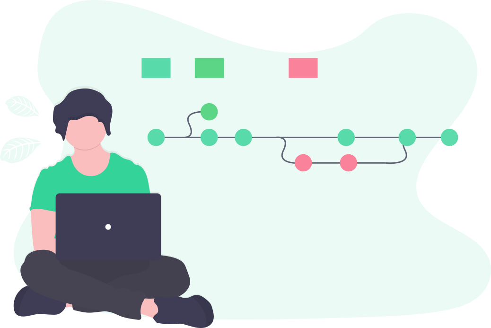

Welcome to Rajat Yadav's extension library
I am attending neog.camp and I want to make a library which would make all my projects task good and consistent.
@typography
This is extremely small
this is the biggest text
This is a normal text. This is free flowing and wrap at the end like a paragraph.
This paragraph will have a bold text
@container
fluid container
This is a fluid container and will go till the end of the page.
centre container
This is a centered container and will go till the specified width.
@Links
Primary link
Secondary link
@list
unordered list
- item one
- item two
- item three
unordered inline list
- Inline item one
- Inline item two
- Inline item three
reversed ordered list
- milk
- eggs
- bread
@nav
header

Rajat Yadav The Web Devloper
@section
white section
This will have white background.
off white section
This will have grey background. This will go end to end with little margin at both sides
@footer